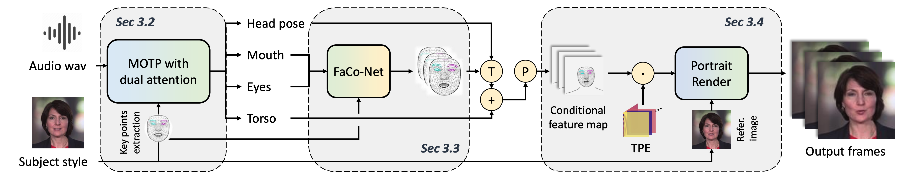
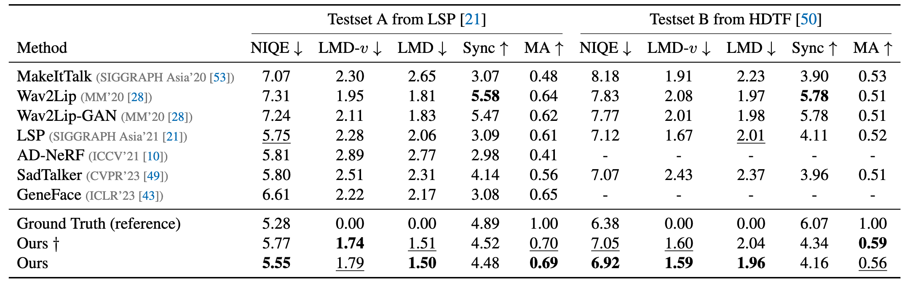
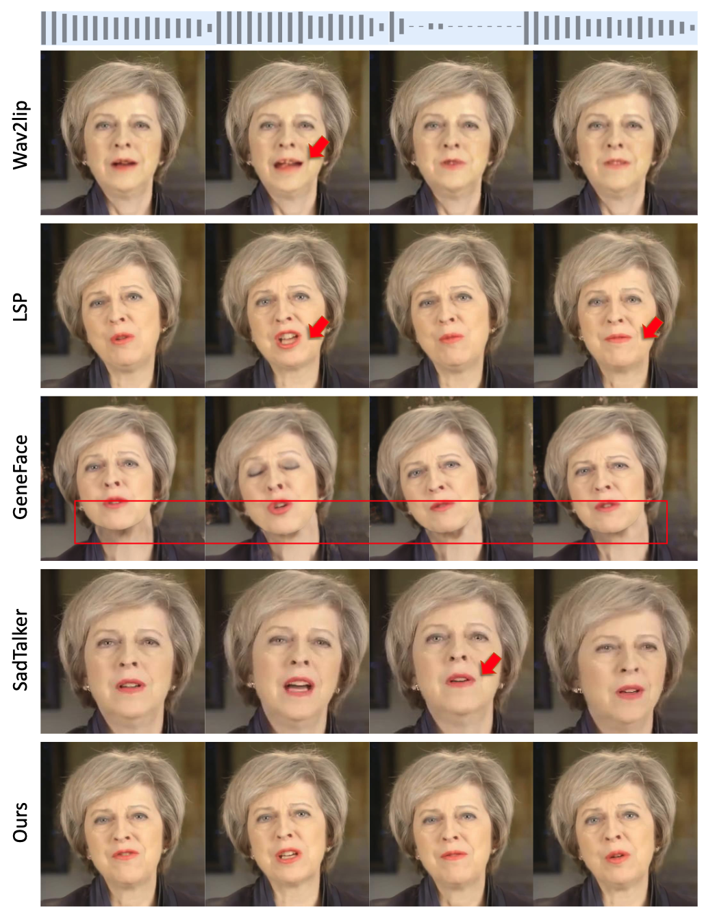

We propose a mapping-once system with dual-attention for multimodal and high-fidelity portrait video animation.
We propose a unified system for multi-person, diverse, and high-fidelity talking portrait generation. Extensive evaluations demonstrate that the proposed system produces more natural and realistic video portraits compared to previous methods.
Overview
Given the subject figure and arbitrary audio, the proposed system generates the audio-driven portrait video.

The proposed method is a three-stage system.
Our method contains three stages, i.e.,
- Mapping-Once network with Dual Attentions (MODA) generates talking representation from given audio. In MODA, we design a dual-attention module to encode accurate mouth movements and diverse modalities.
- Facial composer network generates dense and detailed face landmarks.
- Temporal-guided renderer syntheses stable videos.
Network architecture
Given the driven audio A and subject condition S, MODA aims to map them into R (consists of lip movement, eye blinking, head pose, and torso) with a single forward process.

Architecture of MODA network. Given an audio and subject condition, MODA generates four types of motions within a single forward process.
The proposed DualAttn simultaneously learns one-to-one mapping (SpecAttn) for lip-sync and one-to-many mapping (ProbAttn) for other movements.
Numerical results
Comparisons with state-of-the-art methods. † denotes our generated results with size 256x256 through a small render. Best results are highlighted in bold. The number with underline denotes the second-best result.

Visual results. Visual comparison of 5 state-of-the-art methods.

Video
How to cite
Bibtex
@inproceedings{liu2023MODA,
title={MODA: Mapping-Once Audio-driven Portrait Animation with Dual Attentions},
author={Liu, Yunfei and Lin, Lijian and Fei, Yu and Changyin, Zhou, and Yu, Li},
booktitle={Proceedings of the IEEE/CVF International Conference on Computer Vision},
year={2023}
}